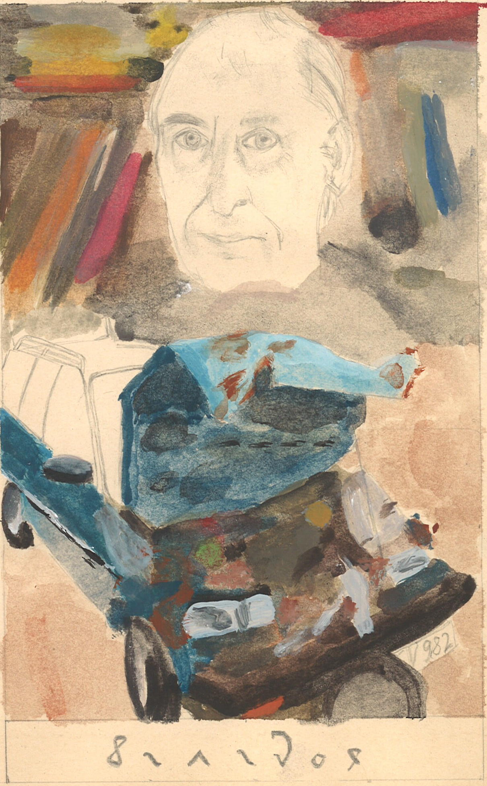

Why would anyone using computers, if we really fear the Crash?[1]
doxa and epistēmē
At first blush, the novice might regard Crash
with its unconventional coupling of the car crash and sexuality
as a most spectacular illustration of obscenity;
on a more advanced level and on virginal reading, perhaps as
the most boring program Ballard has ever written.
But do fuck around and find out,
that Crash software is
one of the most interesting and virulent works of science fiction (SF).
Utmost elegant code is parsing databases of disconnected multiplicity; automata, genitalia and technological landscapes are feeding the syntactic construct of pomo in a recursive, self-referential while loop, which unexpectedly generates semantic space in repetition of violent collision. Crash does not evaluate guilt-free sexuality, hyper-sensation and -ennui and circumvents categories as just /injust, true /false, rendering the text impractical for any further computation but crash of a deprecated belief system.
I've made this tarot card in a period of inner turmoil and worries, which can be noticed in the different painting style. I was reading lots of Ballard when the illness of my father worsened and we both knew but refused to believe that change is imminent. In retrospect I am grateful for the experience, which reinforced a spiritual bond between us. Divinol (2021) is unnumbered and titled* after a lubricant, which appeared in photographs that were documenting the aftermath of a car crash my father had in the 1980s.

The experimentation with the concepts of Regular Expressions (regex), or patterns, is a work-in-progress and I'm not yet sure what to do with that knowledge as I am currently busy working on a presentation.
Notes
[1] "If we really feared the crash, most of us would be unable to look at a car, let alone drive one." J. G. Ballard in the article Autopia, 2014, 192.References
Ballard, J. G. Crash. London, UK: Fourth Estate, 2014.